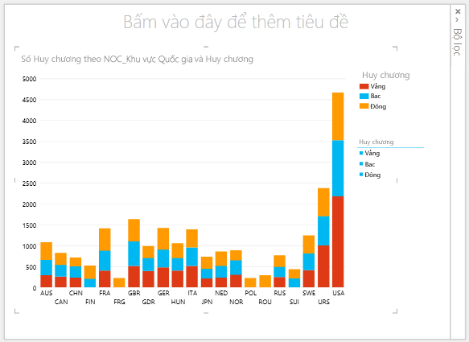
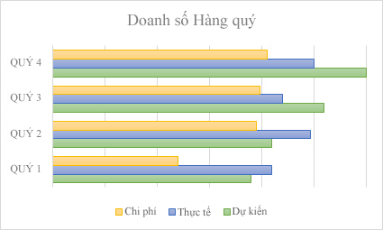
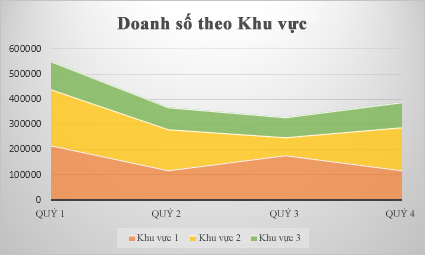
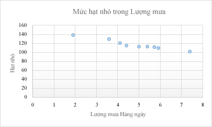

Biểu đồ
Mục lục
Biểu đồ cột
Biểu đồ hình cột về doanh số Đông Nam Á qua năm 2009-2010
1.1 Mô tả
Bao gồm một hệ trục tọa độ mô tả các mức giá trị của dấu hiệu và các cột miêu tả đơn vị điều tra của giá trị dấu hiệu (tần sô, tần suất,..).
1.2 Ưu điểm
- Trực quan theo dõi, so sánh các số liệu với nhau
- Thể hiện được ít nhất là 2 yếu tố liên quan đến số liệu được quy định trên 2 trục tọa độ (dóng sang các cột, hàng...)
- Dễ thiết kế - vẽ do chỉ đơn giản là dóng cột
1.3 Nhược điểm
- Không so sánh được với tổng số
- Phải xử lý độ cao các cột tuyệt đối
1.4 Các dạng
Cột liên cụm
Cột xếp chồng
Mô tả: Gồm các cụm cột liền nhau, thẻ hiện một tập giá trị.
Mô tả: Gồm các đơn vị cột đơn được chồng lên nhau, thể hiện việc so sánh các giá trị với tổng thể.
Biểu đồ đường
Hình ảnh biểu đồ đường gấp khúc tần số thể hiện bảng chiều cao
2.1 Mô tả
Cách vẽ: Gồm hệ trục tọa độ, một trục miêu tả lớp giá trị, trục còn lại miêu tả giá trị giá trị được dóng sang thành các chấm điểm. Các chấm điểm được nối với nhau thành đường gấp khúc.
2.2 Ưu điểm
Thể hiện sự lên xuống của giá trị các giá trị, so sánh các giá trị, thể hiện giá trị của các giá trị. Nên dùng khi có nhiều giá trị.
2.3 Nhược điểm
Không thể hiện so sánh trên tổng số.
2.4 Các dạng
Đường - Cột kết hợp
Đường xếp chồng
Biểu đồ hình quạt
3.1 Mô tả
Cách vẽ: Thường có dạng hình quạt / tròn, có các hình quạt còn thể hiện phần giá trị của giá trị. Khi vẽ, ta đổi giá trị của các dấu hiệu ra phần trăm trên tổng số, và nhân với 3,6 độ, từ đó có giá trị của cung -> vẽ.
3.2 Ưu điểm
So sánh các giá trị của các dấu hiệu với nhau và với tổng thể. Thể hiện trực quan tỷ lệ, to, nhỏ của các giá trị của dấu hiệu.
3.3 Nhược điểm
Không thể hiên trực quan giá trị cụ thể. Khi vẽ phải thông qua tính toán để đổi ra độ -> vẽ được.
3.4 Các dạng
Vành khăn: Được sử dụng khi muốn thể hiện nhiều chuỗi giá trị
Các dạng biểu đồ khác
| Biểu đồ thanh: Dữ liệu được sắp xếp theo các cột hoặc các hàng trên bảng giá trị có thể được biểu thị bằng biểu đồ thanh. Biểu đồ thanh minh họa mối quan hệ so sánh giữa các mục riêng. Trong biểu đồ thanh, các thể loại thường được tổ chức dọc theo trục dọc và các giá trị dọc theo trục ngang |  |
|  | Biểu đồ vùng: Các biểu đồ vùng được sử dụng để biểu thị sự thay đổi theo thời gian và hướng sự chú ý đến tổng giá trị qua một khuynh hướng. Bằng cách biểu thị tổng giá trị, một biểu đồ vùng cũng biểu thị mối quan hệ của các phần so với tổng thể. |
| Biểu đồ tán xạ: Một biểu đồ tán xạ có hai trục giá trị: trục giá trị ngang (x) và dọc (y). Nó kết hợp các giá trị x và y vào trong các điểm dữ liệu duy nhất và hiển thị chúng theo những khoảng hoặc cụm không đều. Biểu đồ tán xạ thường được sử dụng để biểu thị và so sánh các giá trị số như các dữ liệu khoa học, thống kê và kỹ thuật. |  |
Tham khảo
Các dạng bài tập
- Cho bảng số liệu, vẽ biểu đồ như các ví dụ trên
- Cho biểu đồ, tính / nhận xét giá trị dấu hiệu